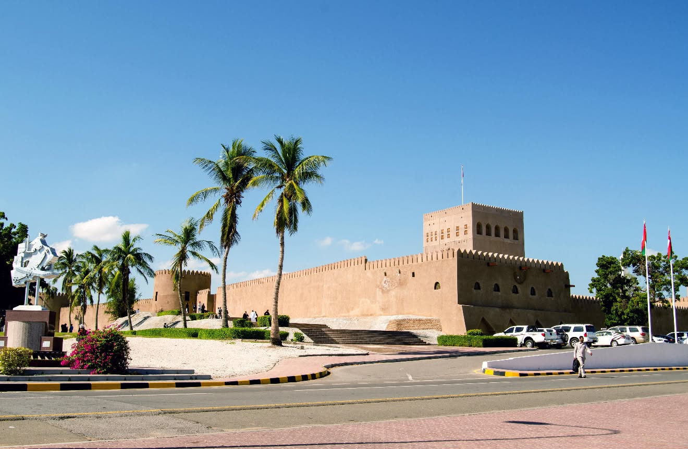
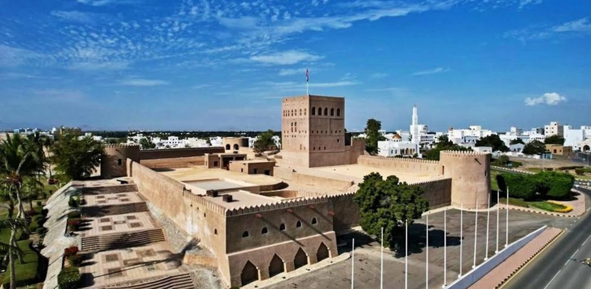
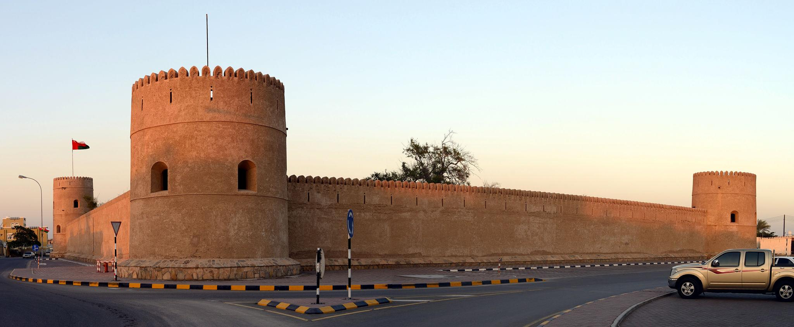
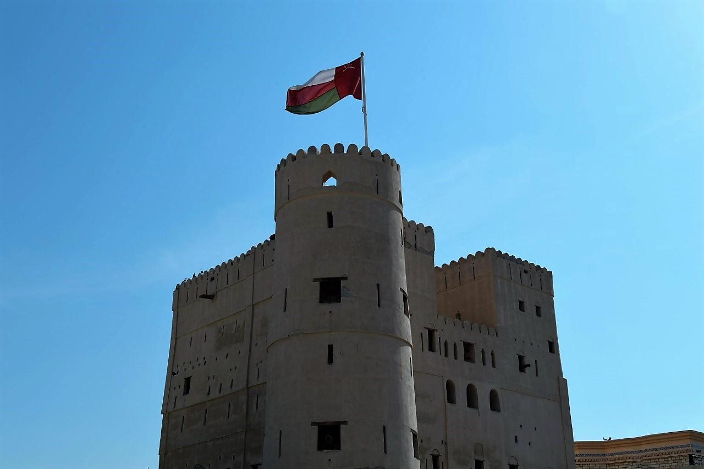
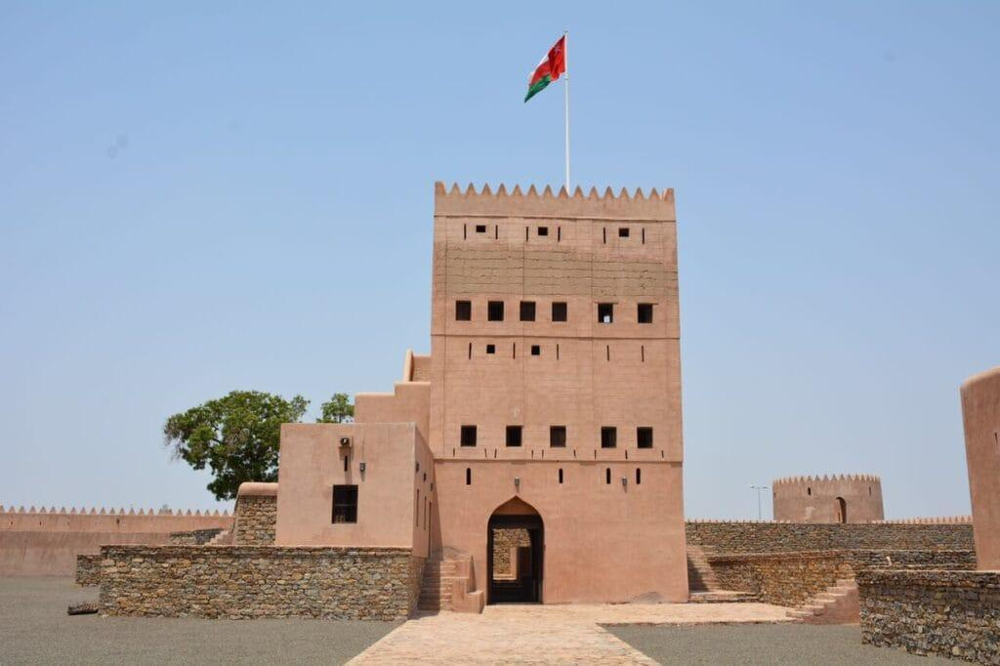
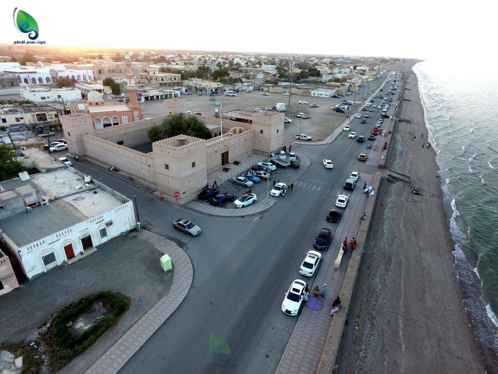
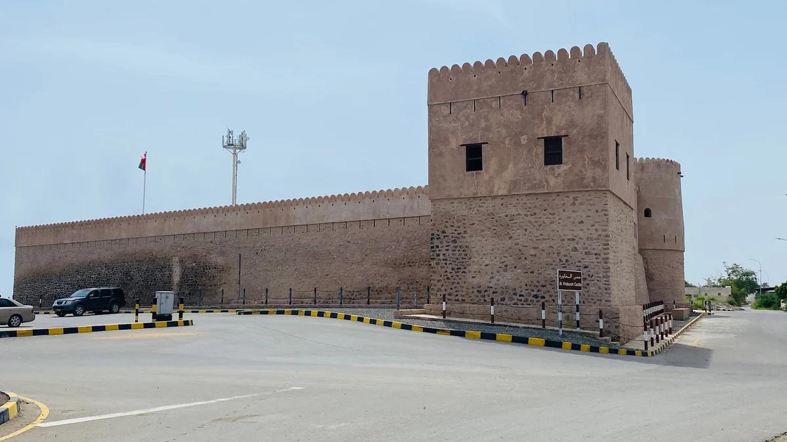
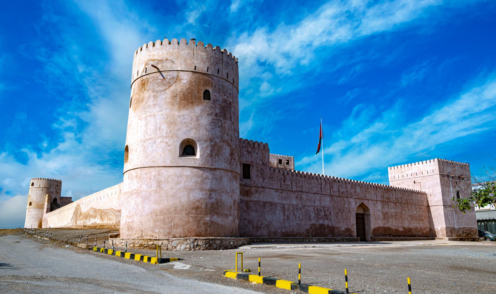

🏰قلعة صحار
📍 ولاية صحار
معلم تاريخي بارز ارتبط بتاريخ مدينة صحار ومكانتها التجارية والبحرية عبر العصور.
قلعة تاريخيةشواهد تاريخية تحكي عراقة الأرض وعمق الحضارة العُمانية
نأخذكم في رحلة بين القلاع والحصون العُمانية، لنتعرّف على شواهد الحضارة التي تركت بصمتها عبر الزمن.
قلاع وحصون تحكي تاريخ الساحل العُماني

🏰معلم تاريخي بارز ارتبط بتاريخ مدينة صحار ومكانتها التجارية والبحرية عبر العصور.
قلعة تاريخية
🏰أحد المعالم الدفاعية التاريخية التي تشهد على أهمية صحار في تاريخ عُمان.
حصن تاريخي
🏰معلم تراثي يعكس الطابع الدفاعي والعمارة التقليدية في الولاية.
حصن تاريخي
🏰من المعالم التاريخية التي تحتفظ بمكانتها ضمن التراث المعماري للمحافظة.
قلعة تاريخية
🏰شاهد تاريخي على العمارة الدفاعية والحياة الاجتماعية في الولاية.
حصن تاريخي
🏰معلم تراثي يرتبط بتاريخ الولاية ويجسد جانبًا من موروثها العمراني.
حصن تاريخي
🏰أحد المعالم التاريخية التي تبرز الموروث الدفاعي في ولاية الخابورة.
حصن تاريخي
🏰معلم تاريخي يعكس جانبًا من تاريخ الولاية وتراثها العريق.
حصن تاريخي 🏰
🏰أحد المعالم التراثية المنسوبة إلى ولاية السويق بمحافظة شمال الباطنة.
حصن تاريخيمعالم شامخة تجسد عمق التاريخ العُماني
 🏰
🏰تُعرف بقلعتها الشهباء، وتعد من أبرز القلاع العُمانية وأشهرها.
قلعة تاريخية 🏰
🏰قلعة تاريخية تحيط بها واحة بهلاء، وهي مدرجة ضمن قائمة التراث العالمي لليونسكو.
تراث عالمي – اليونسكو 🏰
🏰معلم معماري تاريخي يجمع بين الجوانب الدفاعية والفنون المعمارية العُمانية.
حصن تاريخي 🏰
🏰يقع في علاية سمائل، ويعد من المعالم التاريخية البارزة في الولاية.
حصن تاريخي 🏰
🏰قلعة تاريخية عُرفت بخصائصها الدفاعية وفنها المعماري العريق.
قلعة تاريخية 🏰
🏰معلم تاريخي يعكس جانبًا من العمارة الدفاعية العُمانية.
حصن تاريخي 🏰
🏰من المعالم الأثرية التي تحتفظ بها ولاية أدم ضمن موروثها التاريخي.
فلج تاريخية 🏰
🏰معلم تاريخي يقع في الجهة الغربية من ولاية أدم.
فلج تاريخيةقلاع وحصون تحكي أمجاد التاريخ العُماني
 🏰
🏰من أبرز القلاع العُمانية، وتمثل معلمًا تاريخيًا ومعماريًا مهمًا.
قلعة تاريخية 🏰
🏰حصن تاريخي يتميز بفنون العمارة العُمانية والتصميم الدفاعي المميز.
حصن تاريخي 🏰
🏰قلعة شامخة تتربع على تلة جبلية وسط أشجار النخيل، وتعود جذورها إلى فترة ما قبل الإسلام.
قلعة تاريخية 🏰
🏰يقف في وادي بني خروص شاهدًا على تاريخ الولاية وموروثها.
حصن تاريخي 🏰
🏰معلم تراثي بارز يرتبط بتاريخ ولاية بركاء وعمارتها التقليدية.
معلم تراثي 🏰
🏰من المعالم التاريخية في الولاية، وتمثل جانبًا من تاريخها العريق.
قلعة تاريخية 🏰
🏰أحد المعالم التاريخية التي تشهد على الموروث العمراني للولاية.
حصن تاريخيشواهد تاريخية تحرس ذاكرة العاصمة العُمانية
تقابل قلعة الميراني من الجهة الشرقية لخليج مسقط وتُعرف بالكوت الشرقي. اكتمل بناؤها عام 1588م فوق صخرة شاهقة، وشهدت توسعات مهمة في عهد الدولة البوسعيدية.
قلعة تاريخية 🏰
🏰تعلو هضبة صخرية تشرف مباشرة على كورنيش مطرح والسوق القديم. بُنيت عام 1579م لحماية الميناء الطبيعي ومراقبة الطرق المؤدية إلى الداخل، وتُعد وجهة مفتوحة للزوار توفر إطلالة شاملة على الخليج.
قلعة تاريخية 🏰
🏰يقع في ولاية قريات الساحلية ويعود بناؤه إلى القرن التاسع عشر الميلادي. استُخدم مقراً للوالي ومركزاً لحماية الولاية الساحلية ومراقبة حركة الملاحة.
حصن تاريخي 🏰
🏰تُعد قلعة الخوض واحدة من أبرز المعالم التاريخية والأثرية في قرية الخوض القديمة بولاية السيب في محافظة مسقط. تقع القلعة في موقع استراتيجي على ضفة وادي الخوض، وقد لعبت قديماً دوراً حيوياً في حماية القرية ومراقبة الطرق المؤدية إليها وتأمين مواردها المائية من الأفلاج والآبار.
قلعة تاريخية 🏰
🏰تقع في مسقط القديمة وتُعرف تاريخياً باسم الكوت الغربي. شُيّدت بصيغتها الحديثة عام 1587م على أنقاض برج قديم لحماية الميناء من الجهة الغربية، وتضم اليوم مرافق للزوار وإطلالات بانورامية.
حصن تاريخيمعالم تاريخية في أرض اللبان والبخور
 🏰
🏰معلم تاريخي يعكس جانبًا من العمارة التقليدية في محافظة ظفار.
حصن تاريخي 🏰
🏰من المعالم التراثية التي ترتبط بتاريخ الولاية وموروثها المعماري.
قلعة تاريخية 🏰
🏰معلم تاريخي يرتبط بتاريخ مرباط ومكانتها الساحلية والتجارية القديمة.
حصن تاريخي 🏰
🏰حصن تاريخي يتميز بنمط العمارة العُمانية التقليدية في محافظة ظفار.
حصن تاريخي 🏰
🏰تُعد عين حمران من أشهر وأجمل عيون المياه الطبيعية في ولاية طاقة بمحافظة ظفار، وليست في محافظة مسقط. تقع العين في سهل حمران غرب مدينة طاقة، وتبعد حوالي 16 إلى 17 كيلومتراً شرق مركز مدينة صلالة.
عين حمران